Magma has 3 major components:¶

Source [Magma services]
![[Magma services]](https://docs.magmaindia.org/_images/service1.png){kind=link}
About Services¶
1. Control proxy¶
It manages the network transport between the gateway(magmad) and the controller(Orchestrator). Messages sent by the control proxy are encrypted using TLS(Transport Layer Security) and sent over the HTTP/2 protocol with the service name encoded inside the header to identify which service it wants to address. It also transports the events and services logs from the td-agent-bit service to the orchestrator to display them on NMS.
2. Accessd¶
It serves the functionality of the MME or AMF of the LTE or NR Core. It supports registration, mobility, authentication of UE, and some parts of the Session Management Control Plane(CP). It communicates with the Federation Gateway(FGW) through GRPC calls to support the NON-AGW Services such as network-initiated de-registration, retrieving authentication-related parameters, etc for the subscriber.
Accessd → Sctpd
accessd uses the sctpd service to securely and efficiently communicate with the RAN as it provides the guaranteed and safe delivery of signaling messages.
Accessd → Mobilityd
Mobility of the UE is managed by the mobilityd service. It is initiated by the accessd service to do so.
Accessd → Directoryd
Accessd retrieves the different keys or IDs such as Subscriber Identity(IMSI, IP Address, MAC Address), Session ID, etc from the directoryd.
Accessd → Subscriberdb
Accessd retrieves the information to authenticate and authorize the UE in the network from subscriberdb.
Accessd → Sessiond
Accessd sends create, modify and delete session requests to sessiond and is also responsible for setting up session resources with RAN and UE.
Accessd → FGW
Accessd communicates with FGW for non-magma services like HSS/UDM, PCRF/PCF, etc.
3. SctpD¶
SCTP(Stream Control Transmission Protocol) is a Control Plane(CP) signaling protocol that lies between MME and eNB in the LTE System. Similarly, the Sctpd service is a more intermediate between accessd and enodebd service to support the in-sequence transport of signaling messages in a secure way over the IP network.
SctpD → AccessD
Messages are transported in the SCTP packets from AccessD to the EnodebD service.
SctpD → EnodebD
Similarly, the messages from the EnodebD service are transported with the help of SctpD service.
4. SmsD¶
SmsD manages all the SMS(Short Message Service) services with the orchestrator.
SmsD → AccessD
SmsD contacts EnodebD service through AccessD. For example, it sends the SMS to the EnodebD service through the AccessD.
SmsD → DirectoryD
SmsD service requests the DirectoryD for subscriber identity(e.g. IMSI) to identify the user in the network for a particular SMS.
5. Policydb¶
policydb service manages the policy and billing decisions for subscriber sessions. This service runs on AGW and the orchestrator for its implementation in sessions and for adding policies from the controller side. It acts as the 4G System PCRF(Policy and Charging Rules Function) and OCS(Online Charging System) function.
Policydb → SessionD
SessionD extracts the specified rules from the policydb to install them on a particular subscriber session.
Policydb → orchestrator
Policies added by the controller are implemented through policydb on the sessions.
6. SessionD¶
SessionD service is responsible for session management. It retrieves the rules and credit from the policydb and implements them on the datapath through PipelineD for L2-L4 and DpiD for L4-L7. It acts as the PCEF(Policy and Charging Enforcement Function) of the 4G System.
SessionD → policydb
SessionD retrieves PCC(Policy and Charging Control) rules from the policydb to implement them on sessions.
SessionD → PipelineD
SessionD command the PipelineD to implement these rules on the sessions. Through PipelineD, it implements the rules on L2-L4 layers.
SessionD → PipelineD → DpiD
SessionD install the rules for L4-L7(application services) through DpiD.
SessionD → MobilityD
Interact with MobilityD to get Subscriber ID(IMSI) with respect to the IP address during paging request from UPF.
SessionD → DirectoryD
SessionD retrieve the IMSI’s IP address for sending the redirection request to PipelineD.
7. MagmaD¶
MagmaD service is the parent service of all the magma services. It starts all the services and also owns all the information to track the performance and progress of the services. It transfers the information to the orchestrator through the control proxy.
8. DNSd¶
This service provides a local DNS(Domain Name System) and DHCP(Dynamic Host Configuration Protocol) server to the EnodebD service. The DHCP server is responsible for assigning an IP address to a UE on a network so that they can communicate using IP and then it transmits this information to a DNS server which then automatically updates the DNS information.
9. Health checker¶
health checker service reports the AGW-specific health status such as the number of allocated IPs, registration success rate, subscriber table, etc, and some generic health statuses such as gateway-controller connectivity, the status of running services, number of restarts and errors per service, and DNS status, etc to the orchestrator.
10. EnodebD¶
This service is responsible for managing the eNodeB/RAN devices which are used to set up a connection with a simulator such as srsRAN(simulator for UE and RAN). In our case, the device used is TR-069 as a management interface. This is an optional service that is not used in the case of unmanaged eNBs(RAN).
EnodebD → SctpD
EnodebD service sends the messages to AccessD through SctpD service.
EnodebD → srsRAN
EnodebD manages the responses from the srsRAN simulator and shows the logs and messages through NMS.
11. MonitorD¶
This service monitors the CPEs(Customer Premises Equipments) connected to the AGW. It sends ICMP(Internet Control Message Protocol) pings to the CPEs to check their connectivity to the gateway.
For example: Prometheus, Grafana etc.
12. RedirectD¶
The subscriber establishes a TCP(Transport Control Protocol) connection with the RedirectD service, to transfer the traffic to the redirection address to go through PipelineD.
In other words, UE first setup a TCP handshake with the RedirectD service then it establishes a TCP connection with the redirection address provided in the response from the RedirectD. Then, the traffic to this address is allowed to go through PipelineD. The traffic can go straight to the redirected address without being changed in PipelineD.
13. ConntrackD¶
This service tracks the flows for the UE. This is an optional service, only used when there is a need to track the data flows.
ConntrackD → PipelineD
ConntrackD tracks the flows through PipelineD service.
14. Td-agent-bit¶
This service manages and transfers all the system and event logs to the orchestrator. The logs are received by Fluentd and then stored in Elasticsearch on the orchestrator.
For example: Fluentd and Elasticsearch Kibana
Td-agent-bit → EventD
It handles all the logs from the EventD service.
Td-agent-bit → control-proxy
Sends the logs to the orchestrator via control-proxy.
15. EventD¶
EventD service manages the events inside the AGW. Events are those tasks that are performed on the magma services. E.g. updating stored configuration, processing updates, etc.
EventD → td-agent-bit
EventD sends events-related logs to the td-agent-bit service to display them through NMS.
16. CtraceD¶
It traces the call on the AGW with the help of the TShark Tool. This tool is a network protocol analyzer that lets you capture packet data from a live network, decode those packets to the standard outputs, and can be seen through the NMS dashboard. The Tshark is a similar tool to Wireshark.
17. PipelineD¶
It serves a similar role to the user plane function of the 5G System in the AGW. It implements the OVS(Open vSwitch) rules to manage the user plane traffic.
PipelineD → SessionD
Through PipelineD, the SessionD service implements PCEF functionality in L2-L4 layers.
PipelineD → DpiD
DpiD implements its actions through PipelineD service on the datapath.
PipelineD → DirectoryD
PipelineD call DirectoryD service to associate IP for a given subscriber IMSI so that SessionD can properly send the redirection request to PipelineD.
PipelineD → MobilityD
PipelineD call MobilityD to get the gateway info and also retrieve information related to IP blocks.
18. DpiD¶
This service is used for policy enforcement on sessions/ datapath. DPI(Deep Packet Inspection) analyzes the traffic being sent over a network and identifies, prioritizes, redirects, or even blocks packets that meet certain criteria.
DpiD → PipelineD
DpiD implements rules on L4-L7 layers through PipelineD service.
19. Subscriberdb¶
subscriberdb stores authentication vectors, and subscriber information such as IMSI. OP, Secret Key(K), public and private keys, subscriber location, etc. This service is functional only when there is no connection with the federation gateway, mainly with an entity like HSS(Home Subscriber Server).
For example: Postgres
Subscriberdb → AccessD
Subscriberdb provides all the authentication parameters to the AccessD service to authenticate the subscriber-only in case of the absence of an HSS-like node through the FGW(Federation Gateway).
20. DirectoryD¶
Different kinds of keys and attributes are added via the orchestrator to make it available for other services. Commonly used keys added are subscriber identity(IMSI, MAC Address, IP Address), session id, location(gateway hardware ID), etc.
For example: Postgres
DirectoryD → AccessD
DirectoryD provides subscriber ID(e.g. IMSI) to the AccessD service.
DirectoryD → SessionD
Retrieve the Session ID from the SessionD service to update the subscriber record with the current session ID.
DirectoryD → PipelineD
DirectoryD provides the IMSI of the subscriber to PipelineD to associate the learned IP for a given subscriber which eases the SessionD for redirection procedure.
DirectoryD → SmsD
DirectoryD provides the IMSI to SmsD service to identify the SMS for a particular user.
21. MobilityD¶
It manages the IP address of the subscriber. It allocates and releases the IP address for the subscriber on the request from the SessionD service.
MobilityD → AccessD
It is initiated by the AccessD service and manages the IP address of the subscriber(mobility).
MobilityD → SessionD
Provides Subscriber ID(IMSI) to SessionD while paging request from UPF.
MobilityD → PipelineD
MobilityD provides the gateway info and information related to IP blocks to PipelineD service.
Other components:¶
OVS¶
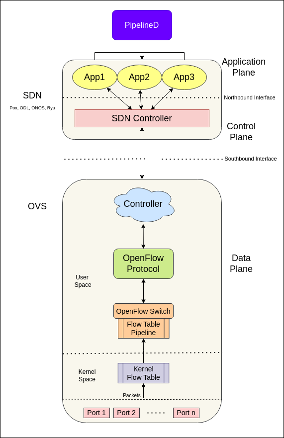{kind=link}
Open vSwitch is a multilayer virtual switch in a virtual environment such as KVM, to interconnect virtual devices in the same host or between different hosts. OVS is used for implementing PCEF functionality(implementing QoS, blocking traffic, etc) for user plane traffic. It also supports OpenFlow protocol and provides deep traffic visibility.
OVS → PipelineD
PipelineD implements all the functions through OVS.
Basic Intro:
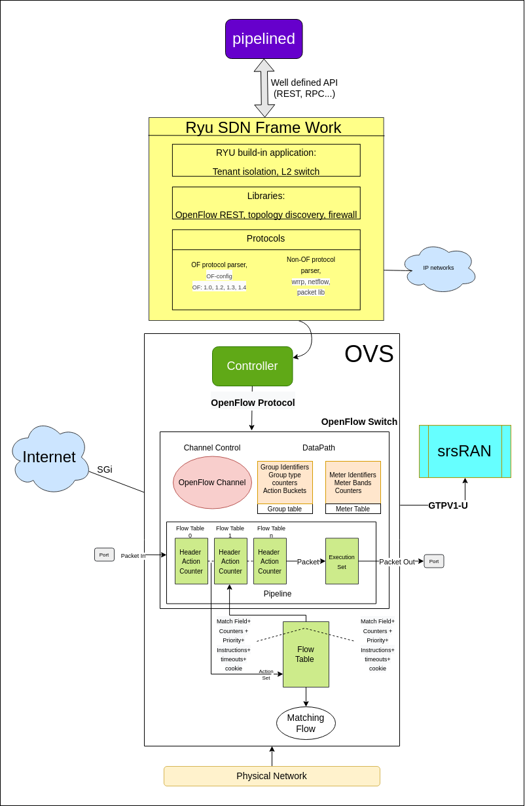{kind=link}
In OVS we have different segments performing specific tasks. Majorly we have three thing in an OVS:
OpenFlow Controller
OpenFlow Protocol
OpenFlow Switch
OpenFlow: is path of network packets across a network of switches. The OpenFlow protocol is layered on top of the Transmission Control Protocol (TCP) and prescribes the use of Transport Layer Security (TLS).
An OpenFlow switch separates the data path from the control path. The data path portion resides on the switch itself; a separate controller makes high-level routing decisions. The switch and controller communicate by means of the OpenFlow protocol.
An OpenFlow Switch consists of one or more flow tables and a group table, which perform packet lookups and forwarding, and an OpenFlow channel to an external controller. - Each flow table entry contains:
match fields: to match against packets. These consist of the ingress port and packet headers, and optionally metadata specified by a previous table.
priority: matching precedence of the flow entry.
counters: updated when packets are matched.
instructions: to modify the action set or pipeline processing.
timeouts: maximum amount of time or idle time before flow is expired by the switch.
cookie: opaque data value chosen by the controller. May be used by the controller to filter flow statistics, flow modification and flow deletion. Not used when processing packets.
Packet Flow:
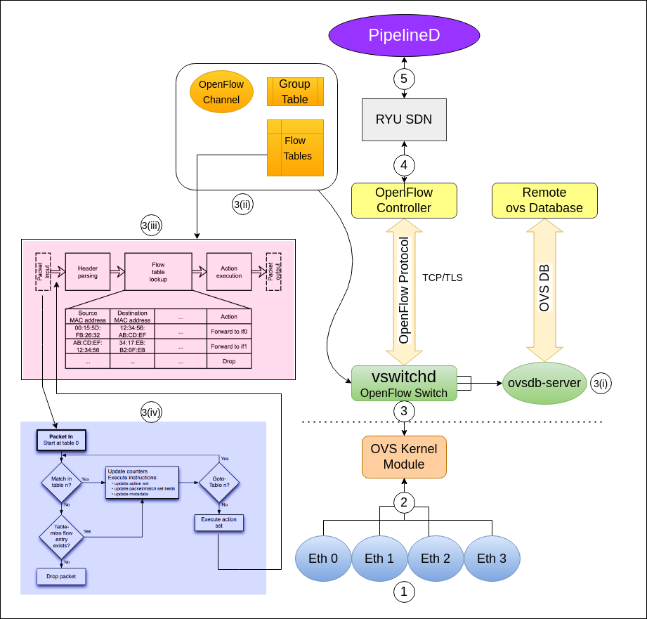{kind=link}
Source [MatchingFlow] - [SDN]
[1]
So starting with the base part, we have a physical network data packet transmitted with the help of ethernet through physical ports. So from the ports the network data packet will flow to the ovs passing through ovs kernel module in kernel space. So after entering into the ovs the main function of ovs occur.
[2]
This is kernel space in which OVS kernel module plays it role. We need not to do anything in this section right now. At this place we can add eBPF to increase the efficiency of data packet flow.
[3]
Here is our user plane. At this stage, the network data packet had reached to it, now we have 3 major components in OvS, i.e The controller, the openflow protocol and the openflow switch as shown in the diagram.
[3(i)]
Here it is also attached to a remote database( redis). It is the data storage hub of OVS.
[3(ii)]
Now in the openflow switch we have different sections(OpenFlow Channel, Group Tables and Flow Tables) that play an important role in the transmission of our data packets but the most significant are flow tables. This sections forms the data path and pipeline part of OVS. So let’s understand the flow with the flow tables i.e how data packets are allowed to pass, checked, verified in them.
[3(iii)]
Here we came to the flow tables. So this the the place where all the packet transmission took place. So when initially a packet is transmitted into the first flow table i.e table 0 it is containing of header, action and counter part within itself and when the packet tries to transmit from one table to other it have to go through some matching protocols within which match field devotes its work. Before forwarding the packet to the another table it has to check whether the match field of this table match with the matchfiled of next table or not( like ingress port, metadata, packet headers etc) and it tires to:
Find the highest-priority matching flow entry.
- Apply instructions:
modify packet & update match fields(apply actions instructions).
Update action set(clear actions and/or write actions instructions).
Update metadata
Send match data and action set to next table.
Now after all this, the data packets moves to the OpenFlow Controller for further procedure.
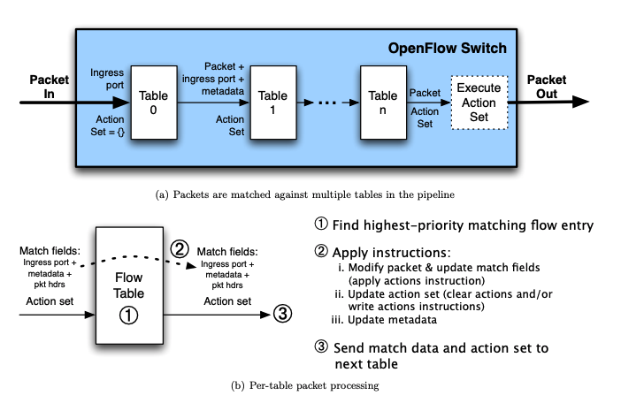{kind=link}
Source [Matching Flow]
![[Matching Flow]](https://raw.githubusercontent.com/magma/magma/master/docs/readmes/assets/openflow-pipeline.png){kind=link}
[4]
The OpenFlow Controller is connected to the OpenFlow Switch by means of OpenFlow Protocol. The OpenFlow protocol is layered on top of the Transmission Control Protocol (TCP) and prescribes the use of Transport Layer Security (TLS). Then the OpenFlow controller is connected to the RYU SDN.
[5]
Here came the final service which will receive the data packet from the ovs. Now from this service all the other service will use these data packets for performng several tasks.
OVS Analysis:
When the data packet reach at vswitch, then some protocols/rules were implemented on data packets, so let’s discuss them:
Adding flows to the ovs:
Source [Flow]

A table flow will be added that drops the packet and take arguments as: datapath, table, match, actions, instructions, priority, retrires and cookies. Also raise an error if flow can’t be added. Here the flow means the data flow of packets.

So in order to get the output through that flow table we need to add an output flow to get the data to a specified port using add_output_flow function. Also raises an error if the flow can’t be added.
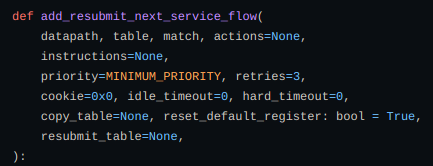 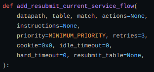{kind=link}
{kind=link}
Now adding a flow to the table to resummit the current/next data to another service using add_resubmit_next_service_flow and add_resubmit_current_service_flow.
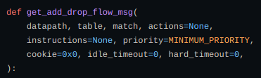{kind=link}
Now adding a message function to get an add flow modification message that drops the packet and it returns OFPFlowMod and also raises error If the actions contain NXActionResubmitTable.
In order to push all the previous flows we need to add a barrier to the specified datapath using set_barrier function.
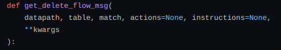{kind=link}
Also to delete a flow → get_delete_flow_msg function.
Messaging in OVS:
Source [Messanging Flow from magma]
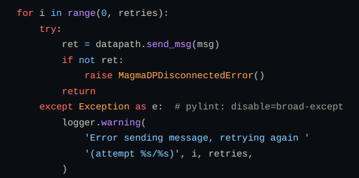{kind=link}
In order to talk with ovs datapath we define send_msg function. Raises error if message fails to send in the specified no of attempts.
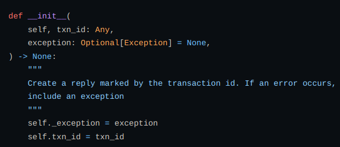{kind=link}
Also defining MsgReply function to reply for a single message send to ovs from the above function.
Now to send some flow modification requests we define MessageHub function which returns a channel to synchronously wait for any results/updatioon.
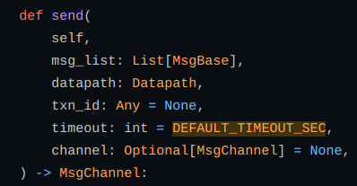{kind=link}
To send a message to ovs we defined a send function in OVS that tracks the result asynchronously. Multiple messages can be tracked using transaction id (txn_id).
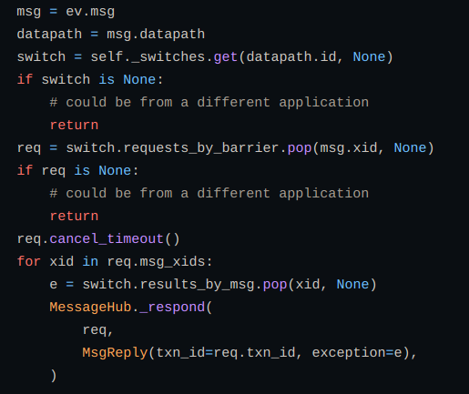{kind=link}
To maintain the completion of messages before a certain boundary we use handle_barrier function and similarly we define handle_error function to get an error if a message sent to OVS is unsuccessful.
OVS metering:
Source [Metering in ovs]
Added a common QOS manager with two implementations of QOS including linux tc and ovs metering mechanism. The implementation can be chosen based on the knob configured in pipelined.yml. Added unit tests to verify the behavior. The Qos integration tests also seem to be passing.

Defining a MeterClass class for adding different metering functions:
add_meter → adding meter for monitoring usage.
Del_meter → deleting meter as defined in above case.
RYU SDN:
Application Layer: consists of business and network logic applications
Control Layer/SDN Framework: r consists of network services
Infrastructure Layer: consists of physical and virtual devices.
{kind=link}
Source [SDN]
The middle layer hosts northbound APIs and southbound APIs.
The controller exposes open northbound APIs such as a Restful management API, REST, API for Quantum, User-defned API via REST or RPC, which are used by applications.
The southbound interface is capable of supporting multiple protocols such as OpenFlow, Netconf, OF-confg, etc.
RYU uses OpenFlow to interact with the forwarding plane (switches and routers) to modify how the network will handle traffic flows.
Functioning:
To implement a SDN architecture, – 3 things needed.
SDN applications: programs that communicate behaviors and needed resources with the SDN Controller via APIs.
SDN Controller: logical entity that receives instructions or requirements from the SDN Application layer and relays them to the networking components.
SDN Networking Devices: control the forwarding and data processing capabilities of the network. It includes forwarding and processing of the data path.
Simulators to create sdn architecture: OMNET++ , EstiNet , OFNet , MaxiNet , NS-3 and Mininet.
srsRAN¶
This is a simulator for UE and RAN.
srsRAN → EnodebD
Response from the srsRAN is managed by the EnodebD service.